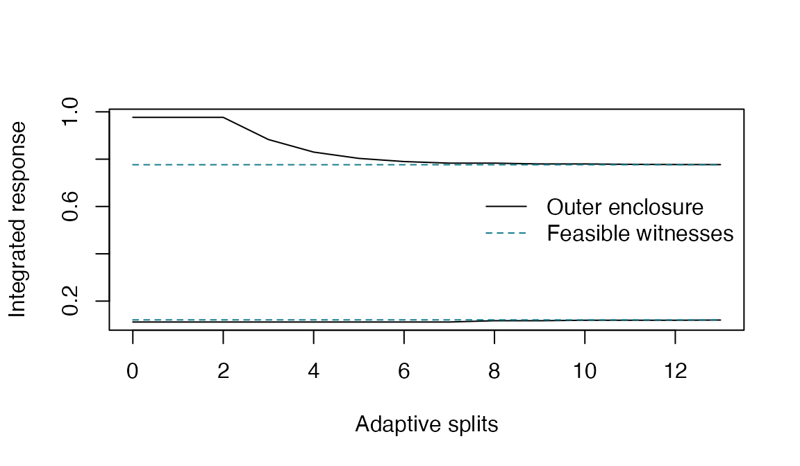

Start with the scientific target
The target is the average excess response over baseline on a specified linear dose axis. Its units are response units; it is the area divided by the axis length. It is not the response at the maximum dose or the unrestricted baseline. A valid inferential use requires fixed replicated doses, independent Gaussian errors with a common positive variance, and the nonnegative closed Emax model.
Use observations or sufficient statistics
The following synthetic example is deterministic and uses no random draws.
x <- rep(c(0, 0.5, 1), each = 4)
y <- rep(c(0.2, 0.6, 0.8), each = 4) + rep(c(-0.1, 0.1, -0.2, 0.2), 3)
region <- emax_region(x, y, D = 1, calibration = "contrast")
result <- emax_project(region)
result
#> Integrated Emax response | contrast calibration
#> Status: nonempty; termination: endpoint_tolerance
#> Outer interval: [0.119988, 0.77697]
#> Endpoint gaps: 0.000742786, 0.000542016; converged: TRUE
#> Ordinary double precision; no directed-rounding certificate.No observations are excluded. Missing values and invalid designs cause an error. A summary interface uses dose means, replication counts, and the pooled within-dose variance. It cannot substitute a model residual variance or a standard error for that variance.
summary_region <- emax_region_from_summary(
region$x, region$counts, region$means, region$pooled_variance,
D = region$D, calibration = "contrast"
)
stopifnot(isTRUE(all.equal(result$interval, emax_project(summary_region)$interval)))Read the diagnostics before using the interval
result[c("status", "converged", "termination", "endpoint_gaps", "width_bounds")]
#> $status
#> [1] "nonempty"
#>
#> $converged
#> [1] TRUE
#>
#> $termination
#> [1] "endpoint_tolerance"
#>
#> $endpoint_gaps
#> [1] 0.0007427859 0.0005420161
#>
#> $width_bounds
#> [1] 0.6556971 0.6569819
plot(result)
Solid lines are outer bounds and dashed lines are feasible witness bounds. The display shows numerical search progress, not a simultaneous confidence band for the response curve. An empty intersection and unresolved feasibility have distinct statuses. A budget-limited result must retain its diagnostics.
Compare calibrations on the same data
mean_region <- emax_region(x, y, D = 1, calibration = "mean")
mean_result <- emax_project(mean_region)
knitr::kable(data.frame(
calibration = c("Contrast", "Full mean region"),
lower = c(result$interval[1], mean_result$interval[1]),
upper = c(result$interval[2], mean_result$interval[2])
), digits = 5)| calibration | lower | upper |
|---|---|---|
| Contrast | 0.11999 | 0.77697 |
| Full mean region | 0.08708 | 0.83943 |
The contrast region removes the intercept before calibration. Its ideal projected hull is contained in the full mean-region hull. Independently computed outer brackets can differ because of their finite endpoint gaps; do not clip intervals to force a numerical containment result.
The methods guide explains assumptions and boundaries. The reproduction guide distinguishes local package validation from the completed manuscript study.